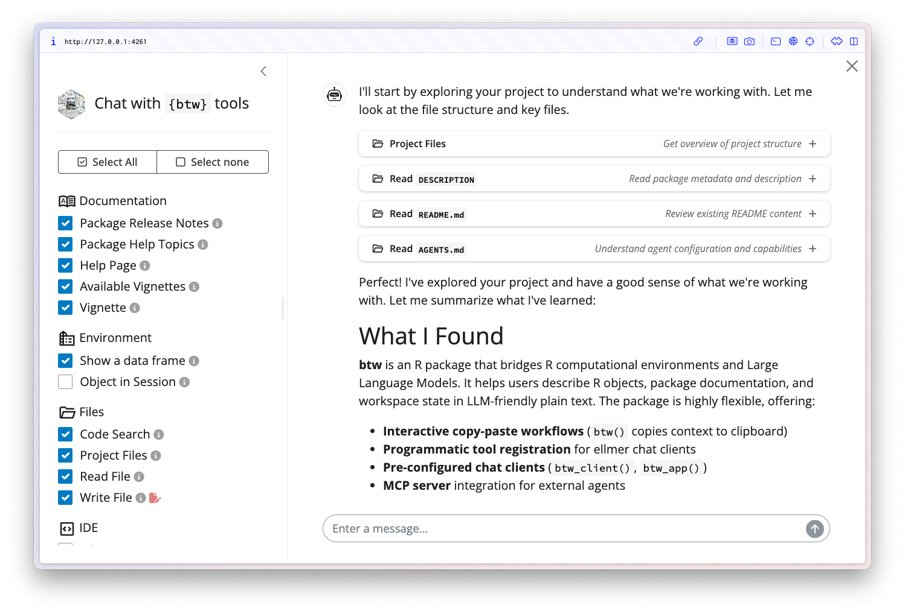

A complete toolkit for connecting R and LLMs
Overview
btw helps R users work with Large Language Models, whether you’re pasting context into ChatGPT, chatting with an AI assistant in your IDE, or building LLM-powered applications.
The challenge: LLMs need context about your R environment to be helpful—your data structures, the packages you’re using, relevant documentation.
btw provides a flexible toolkit that works across different workflows:
- Copy-paste to external LLMs: Quickly gather context from your R session and copy it to your clipboard for pasting into ChatGPT, Claude, or any other chat interface.
- Interactive chat in R: Launch a full-featured AI assistant directly in your IDE that can explore your environment, read documentation, and help you write code.
- Build LLM-powered tools: Integrate btw’s capabilities into your own applications, whether you’re creating custom chat interfaces or connecting R to coding agents.
Quick Start
Copy-paste workflow
Use btw() to gather context from your R session and copy it to your clipboard:
library(btw)
# Describe a data frame
btw(mtcars)
# Include package or function documentation
btw("{dplyr}", ?dplyr::across)
# Combine multiple pieces of context
btw(mtcars, "{dplyr}", "How do I calculate the mean mpg by cylinder?")The context is copied to your clipboard, ready to paste into ChatGPT, Claude, or any LLM chat interface.
Interactive chat in your IDE
Launch a chat interface with btw_app():
btw_app()
For persistent project context, create a btw.md file with use_btw_md(). This creates a project-specific configuration file where you can define your preferred LLM provider, model, and custom instructions that apply to all conversations in your project.
Building with btw
btw supercharges ellmer! Use btw_client() for a pre-configured chat client, the same client used by btw_app().
# Uses provider, model, tools and instructions from btw.md
chat <- btw_client()
chat$chat("Help me write documentation for...")Or use btw_tools() to get a list of tools you can register with any ellmer chat client.
library(ellmer)
chat <- chat_anthropic() # or chat_openai(), chat_ollama(), etc.
chat$register_tools(btw_tools())
chat$chat("What data frames are in my environment?")Pick and choose which tools you use with friendly group names::
Or expose btw tools to external coding agents via the Model Context Protocol using mcptools:
# Run as a background process or in a separate R session
btw_mcp_server()You can configure the MCP server in Claude Desktop, Continue, or other MCP-compatible tools to give them access to your R environment.
Installation
Install btw from CRAN:
install.packages("btw")Or install the development version:
# install.packages("pak")
pak::pak("posit-dev/btw")Learn More
For questions or issues, please open an issue on GitHub.